Julia Fukuyama
Frequency/time scale analysis (reading: https://bookdown.org/rdpeng/timeseriesbook/frequency-and-time-scale-analysis.html)
Autoregressive processes
library(tsModel)
library(broom)
data(balt)
balt$date = as.Date(balt$date, format = "%Y-%m-%d")
balt_subset = subset(balt, date <= as.Date("1992-01-01", format = "%Y-%m-%d") & date >= as.Date("1990-01-01", format = "%Y-%m-%d"))
ggplot(balt_subset) + geom_line(aes(x = date, y = tmpd))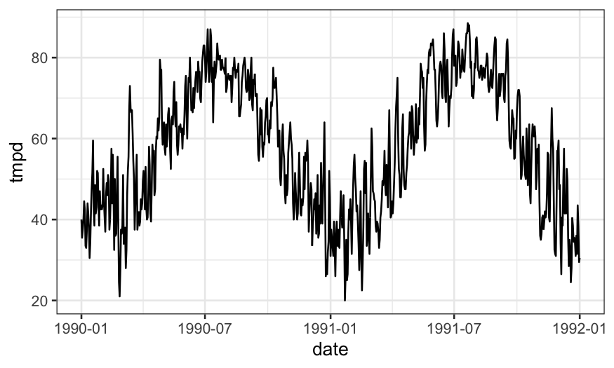
## # A tibble: 2 × 5
## term estimate std.error statistic p.value
## <chr> <dbl> <dbl> <dbl> <dbl>
## 1 (Intercept) 57.9 0.186 312. 0
## 2 cos(time * 2 * pi/365) -19.2 0.262 -73.1 0Doesn’t fit exactly, but it gets a lot of the structure:
ggplot(data.frame(resid = residuals(lm_year_cos), balt_subset),
aes(x = date, y = resid)) +
geom_point() + stat_smooth(method = "loess", span = .4)## `geom_smooth()` using formula = 'y ~ x'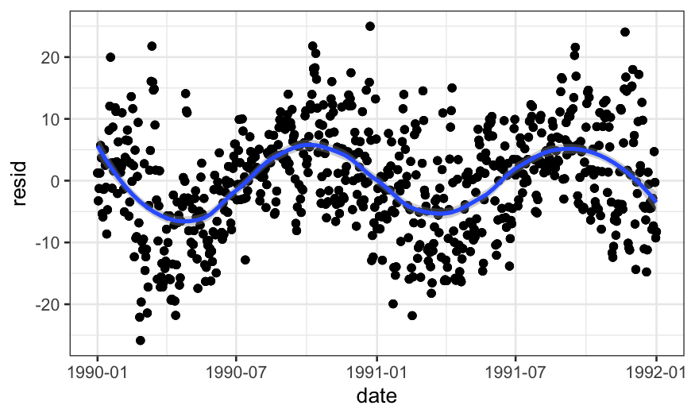
Is this a big coefficient? One way to tell is to add in cosine functions corresponding to different frequencies and compare:
## terms for cosine with one-year and 6-month frequencies
lm_year_half_year_cos = lm(tmpd ~ cos(time * 2 * pi/365) + cos(time * 2 * pi * 2/365),
data = balt_subset)
lm_year_half_year_cos %>% tidy## # A tibble: 3 × 5
## term estimate std.error statistic p.value
## <chr> <dbl> <dbl> <dbl> <dbl>
## 1 (Intercept) 57.9 0.185 313. 0
## 2 cos(time * 2 * pi/365) -19.2 0.262 -73.2 0
## 3 cos(time * 2 * pi * 2/365) 0.578 0.262 2.21 0.0273## terms for cosine with one-year, 6-month, 4-month frequencies
lm_year_half_third_cos = lm(tmpd ~ cos(time * 2 * pi/365) + cos(time * 2 * pi * 2/365) + cos(time * 2 * pi * 3/365),
data = balt_subset)
lm_year_half_third_cos %>% tidy## # A tibble: 4 × 5
## term estimate std.error statistic p.value
## <chr> <dbl> <dbl> <dbl> <dbl>
## 1 (Intercept) 57.9 0.185 312. 0
## 2 cos(time * 2 * pi/365) -19.2 0.262 -73.2 0
## 3 cos(time * 2 * pi * 2/365) 0.578 0.262 2.21 0.0274
## 4 cos(time * 2 * pi * 3/365) 0.0218 0.262 0.0834 0.934We can also compare to larger frequencies:
## terms for cosine with one-year, 6-month, 4-month, 4-year frequencies
lm_year_half_third_four_cos = lm(tmpd ~ cos(time * 2 * pi/365) + cos(time * 2 * pi * 2/365) + cos(time * 2 * pi * 3/365) + cos(time * 2 * pi * .25/365),
data = balt_subset)
lm_year_half_third_four_cos %>% tidy## # A tibble: 5 × 5
## term estimate std.error statistic p.value
## <chr> <dbl> <dbl> <dbl> <dbl>
## 1 (Intercept) 57.9 0.184 316. 0
## 2 cos(time * 2 * pi/365) -19.2 0.259 -73.9 0
## 3 cos(time * 2 * pi * 2/365) 0.583 0.259 2.25 2.47e- 2
## 4 cos(time * 2 * pi * 3/365) 0.0265 0.259 0.102 9.19e- 1
## 5 cos(time * 2 * pi * 0.25/365) -1.73 0.259 -6.67 3.28e-11The previous analysis convinced us that the one-year frequency cosine was a lot more explanatory than the other frequencies. Does it help to add sine terms as well?
lm_year_cos_sin = lm(tmpd ~ cos(time * 2 * pi/365) + sin(time * 2 * pi/365), data = balt_subset)
lm_year_cos_sin %>% tidy## # A tibble: 3 × 5
## term estimate std.error statistic p.value
## <chr> <dbl> <dbl> <dbl> <dbl>
## 1 (Intercept) 57.9 0.165 352. 0
## 2 cos(time * 2 * pi/365) -19.2 0.233 -82.4 0
## 3 sin(time * 2 * pi/365) -5.67 0.233 -24.4 3.62e-116ggplot(data.frame(resid = residuals(lm_year_cos_sin), balt_subset),
aes(x = date, y = resid)) +
geom_point() + stat_smooth(method = "loess", span = .4)## `geom_smooth()` using formula = 'y ~ x'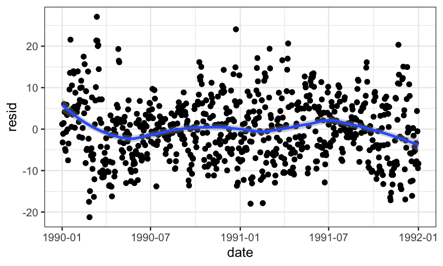
Answer: Yes, cosine + sine with one-year frequencies does a pretty good job.
The Nyquist freqency is the highest frequency of variation that the observed data can provide any information about.
If we have \(n\) observations, then the most number of cycles that we can observe in the time series is \(n / 2\), or one cycle every other data point. Another way of saying that is that the Nyquist frequency is \(f = 1/2\), i.e. a half a cycle per day or one cycle per 2 days.
The opposite of the Nyquist frequency is the lowest frequency the data can provide us information about. This is one cycle per \(n\) observations.
We can extend the idea behind the sine/cosine models from a couple slides ago to make a full “model” for the data. It will be \[ y_t = a_0 + \left\{ \sum_{p=1}^{n/2-1} a_p \cos(2\pi tp/n) + b_p \sin(2 \pi t p / n) \right\} + a_{n/2} \cos(\pi t) \] (no \(b_{n/2}\) because \(\sin(\pi t) = 0\) for all integer \(t\)).
This model has the same number of parameters as data points, and since the predictors are not collinear, it will be able to exactly recreate the \(y_t\)’s.
This means it’s not exactly a “model” in the tradition sense, but more of a transformation of the data from the raw data (\(y_t\)’s) to information about how much of the signal is concentrated at different frequencies (the \(a_p\)’s and \(b_p\)’s).
It turns out that: \[ \frac{1}{n} \sum_{t=0}^{n-1} (y_t - \bar y)^2 = \sum_{p=1}^{n/2 - 1} R_p^2 / 2 + a_{n/2}^2 \] where \(R_p^2 = a_p^2 + b_p^2\).
Therefore, the amount of variance associated with frequency \(p\) is \(R_p^2 / 2\).
We can plot the \(R_p^2\) values to get a better understanding of the data.
The normal way to plot this is to let \(\omega_p = 2\pi p / n\), and plot \[ I(\omega_p) = \frac{n}{4\pi} R^2_p. \]
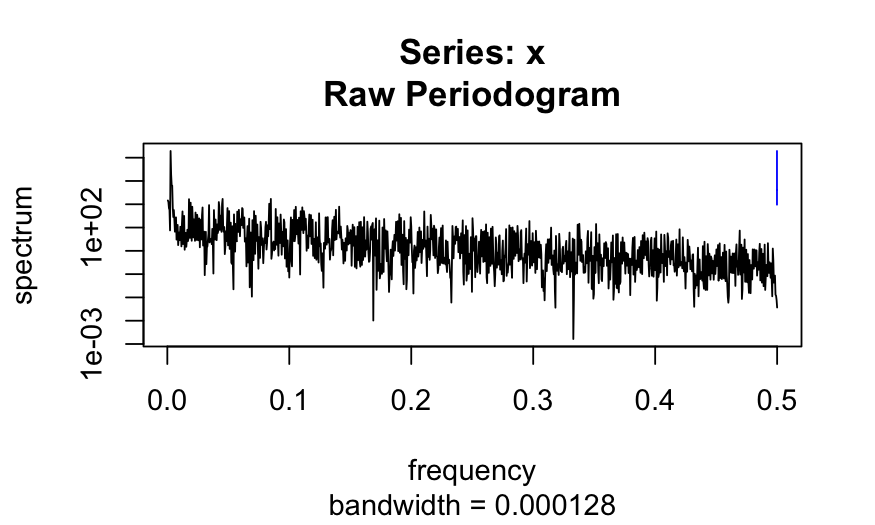
ggplot(data.frame(freq = spec.out$freq, spec = spec.out$spec))+
geom_line(aes(x = freq, y = log10(spec)))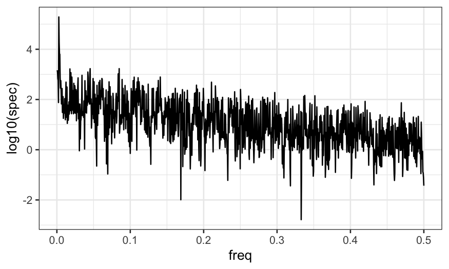
ggplot(data.frame(freq = spec.out$freq, spec = spec.out$spec))+
geom_line(aes(x = freq, y = log10(spec))) + xlim(c(0, .05))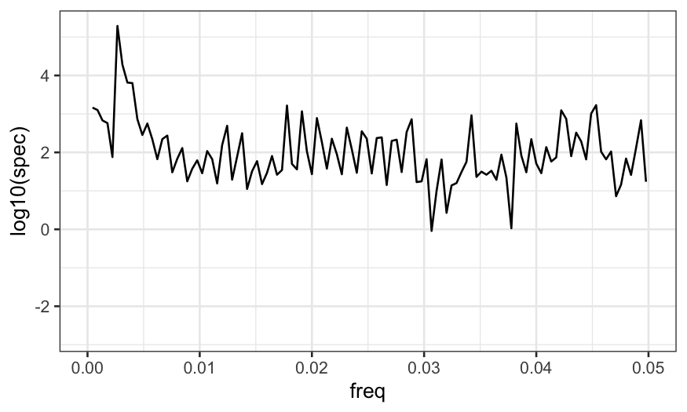
## finding the max frequency in the raw periodogram
max_freq = spec.out$freq[which.max(spec.out$spec)]
max_freq^(-1)## [1] 375Turns out the raw periodogram is not a consistent estimator, but if it is smoothed it can be (https://online.stat.psu.edu/stat510/book/export/html/673 for more information, and for a definition of the modified Daniell kernel used in the function below).
## compute the smoothed periodogram
smoothed_spectrum = spec.pgram(balt_subset$tmpd, spans = c(3,3))
plot(smoothed_spectrum)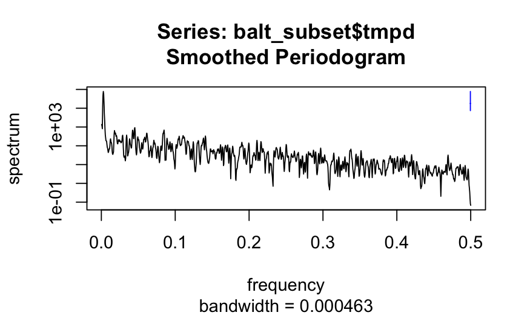
## finding the max frequency in the raw periodogram
max_freq = smoothed_spectrum$freq[which.max(smoothed_spectrum$spec)]
max_freq^(-1)## [1] 375What is an autoregressive process? Idea: Today’s observation is a function of yesterday’s observation.
The definition of an AR(1) process: \[ y_t = \alpha y_{t-1} + \epsilon_t \]
An AR(p) process: \[ y_t = \alpha_1 y_{t-1} + \alpha_2 y_{t-2} + \cdots + \alpha_p y_{t-p} + \epsilon_t \]
set.seed(0)
ts_out_1 = arima.sim(model = list(ar = .9), n = 1000)
ts_out_2 = arima.sim(model = list(ar = c(.5, .1)), n = 1000)
plot(ts_out_1)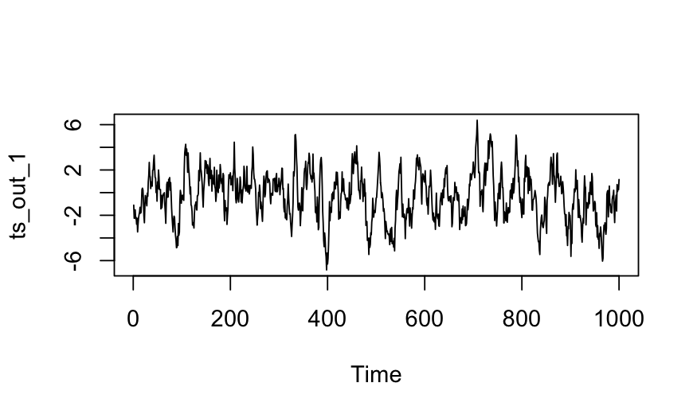
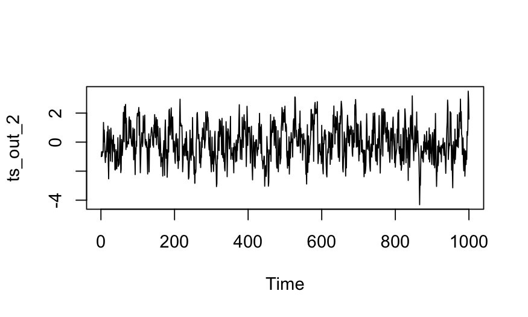
Suppose we wanted to check whether the mean of the process
ts_out_1 is equal to 0.
Marginally, each observation in an AR process has a normal distribution, so if you didn’t realize there was dependence you might be tempted to use normal-theory confidence intervals for the mean.
##
## One Sample t-test
##
## data: ts_out_1
## t = -4.3071, df = 999, p-value = 1.817e-05
## alternative hypothesis: true mean is not equal to 0
## 95 percent confidence interval:
## -0.4168455 -0.1559012
## sample estimates:
## mean of x
## -0.2863733In this case we get a very significant result even though we simulated this dataset and know that it has mean zero. You can check that the same is true of most other intervals. The problem is that the samples are not independent of each other and so the conditions required for the test/confidence intervals are not met.
Can plot the autocorrelation function:
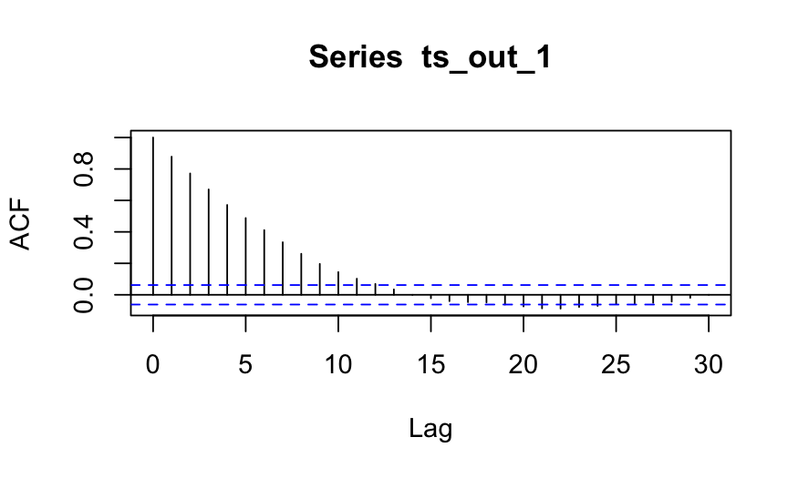
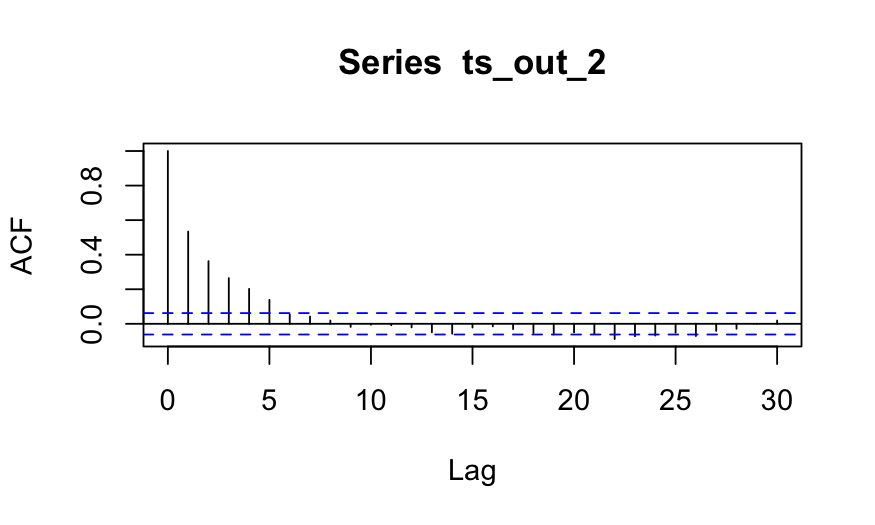
The dashed lines are where we can expect the ACF values to fall if the variables are all uncorrelated.
We can check by comparing to what the ACF looks like if we compute it for independent observations:
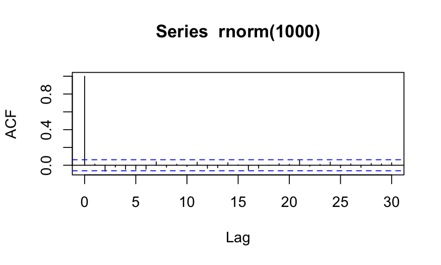
One thing that you can do to correct this problem is to use the effective sample size (ESS) instead of the actual sample size when computing standard errors.
Idea behind ESS: the size of an iid sample that would give the same standard error. There are several different formulations with slightly different assumptions. They are commonly used in MCMC.
## var1
## 64.79996## var1
## 221.4042## var1
## 1024## compute the se for ts_out_1 with the effective sample size instead of the actual sample size
se1 = sd(ts_out_1) / sqrt(effectiveSize(ts_out_1))
mean1 = mean(ts_out_1)
c(mean1 - 1.96 * se1, mean1 + 1.96 * se1)## var1 var1
## -0.7983051 0.2255584## same thing for ts_out_2
se2 = sd(ts_out_2) / sqrt(effectiveSize(ts_out_2))
mean2 = mean(ts_out_2)
c(mean2 - 1.96 * se2, mean2 + 1.96 * se2)## var1 var1
## -0.1906754 0.1336417Frequency analysis: we can make a transformation that tells us about how much of the variance in a time series is contained in different frequencies.
Correlation in time series processes: can really screw up standard errors, can check for it using the autocorrelation function, can usually fix it by using an effective sample size instead of the actual sample size.
There is a lot more about modeling time series. You should take a class or read a book if you want to learn more.